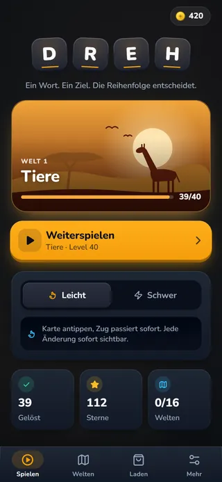
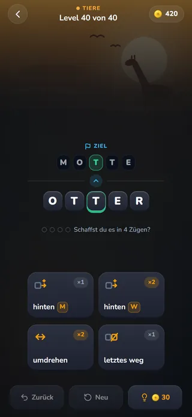
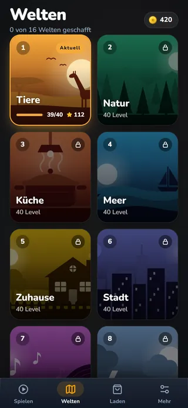

Worträtsel
DREH
„Ein Wort. Ein Ziel. Die Reihenfolge entscheidet.“
Verwandle ein Startwort Zug um Zug in das Zielwort – mit Karten wie „umdrehen“, „letztes weg“ oder „hinten M“. So wird aus einer LAUS ein WAL und aus einem OTTER eine MOTTE.
- 16Welten
- 640Level je Sprache
- 11Kartenarten
- 2Spielarten
- Sechzehn Themenwelten mit je 40 Leveln – von Tiere, Natur und Küche bis Fantasie und Weltall.
- Eigene Levelkataloge auf Deutsch und auf Englisch.
- Leicht: Jeder Zug passiert sofort. Schwer: Du planst alle Züge vorher und startest dann.
- Jedes Level ist vom Löser bewiesen, die kürzeste Lösung ist bekannt – schaffst du sie auch?
- Zwölf Designs und sechs Musikstücke, freizuschalten mit Münzen, die du beim Lösen verdienst.
- Bald bei Google Play
- Bald im App Store



Screenshots aus der aktuellen Version von DREH